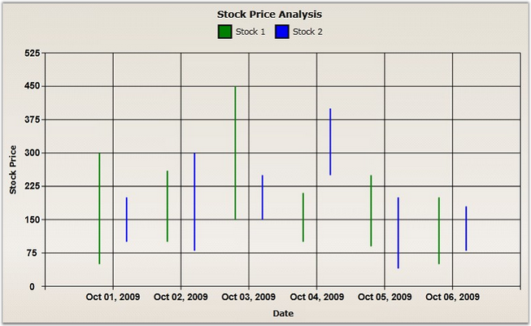

HiLo chart is a special kind of chart that is normally used in stock analysis. They are typically used to display error bars or the trading range of a stock for each period. HiLo chart expects two Y values to be specified in the series. One value should represent the high stock price and the other value should represent the low stock price for the period. This can be specified in any order.
The following code example illustrates how to create a HiLo Chart.
|
[XAML]
<syncfusion:ChartSeries Type="HiLo" Label="Stock 1" Interior="Green" Stroke="Black" DataSource="{StaticResource data1}" BindingPathX="StockDate" BindingPathsY="MaxStockPrice, MinStockPrice"> </syncfusion:ChartSeries>
<syncfusion:ChartSeries Type="HiLo" Label="Stock 2" Interior="Blue" Stroke="Black" StrokeThickness="2" DataSource="{StaticResource data2}" BindingPathX="StockDate" BindingPathsY="MaxStockPrice, MinStockPrice"> </syncfusion:ChartSeries> |
|
[C#]
ChartArea area = new ChartArea();
// Create HiLo Chart. ChartSeries series = new ChartSeries(); series.Type = ChartTypes.HiLo; ChartSeries series2 = new ChartSeries(); series2.Type = ChartTypes.HiLo;
// Initialize chart data. series.DataSource = this.Resources["data1"] as StockData; series.BindingPathX = "StockDate"; series.BindingPathsY = new List<string>() { "MaxStockPrice", "MinStockPrice" };
series2.DataSource = this.Resources["data2"] as StockData; series2.BindingPathX = "StockDate"; series2.BindingPathsY = new List<string>() { "MaxStockPrice", "MinStockPrice" }; area.Series.Add(series); area.Series.Add(series2); |

Figure 40: HiLo Chart